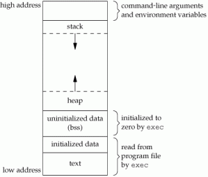
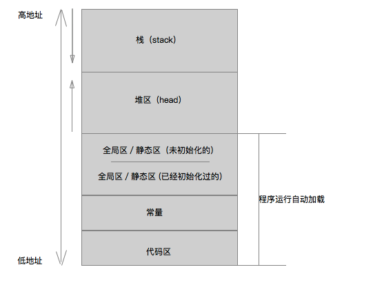
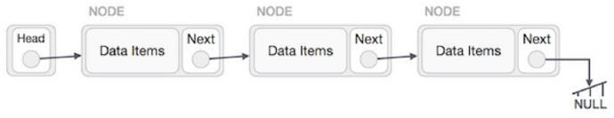
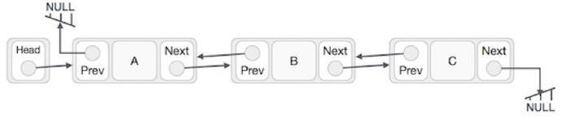

属性
介绍
属性（property）是Objective-C的一项特性，用于封装对象中的数据。这一特性可以令编译器自动编写与属性相关的存取方法，并且保存为各种实例变量。
本质：属性的本质是实例变量与存取方法的结合。
@property = ivar + getter + setter
特质
原子性： atomic/nonatomic
读写权限：readwrite/readonly
内存管理语义： assign/strong/copy/weak/unsafe_unretained
存取方法名： getter=<name>/setter=<name>
原子性
问题：什么是原子性？ 说明并比较atomic和nonatomic。 atomic是百分之百安全的吗？
原子性：并发编程中确保其操作具备整体性，系统其它部分无法观察到中间步骤，只能看到操作前后的结果。
原子操作是不可分割的操作，在原子操作执行完毕之前，其不会被任何其它任务或事件中断。
在单处理器系统(UniProcessor)中， 能够在单条指令中完成的操作都可以认为是" 原子操作"，因为中断只能发生于指令之间。
某些CPU指令系统中引入了test_and_set、test_and_clear等指令产生临界资源互斥效果。
在对称多处理器(Symmetric Multi-Processor)结构中因为存在多个处理器之间将相互并行的抢占计算机资源，即处理器之间并行的相互强行切换，即使能在单条指令中完成的操作也有可能受到干扰。
CPU提供了在指令执行期间对总线加锁的手段。CPU芯片上有一条引线#HLOCK pin，如果当汇编语言的程序中在一条指令前面被加上前缀"LOCK"，经过底层汇编以后的产生的机器代码就使CPU在执行这条指令期间把引线#HLOCK pin的电位拉低，电位拉低促使同一总线上别的CPU就暂时不能通过总线访问内存了，结束其他CPU的干扰影响，一直持续到这条lock锁指令结束时放开电位重新恢复至高电位，使得其他CPU可以通过总线访问内存。在此期间，保证了同一时间段下只有这条唯一的指令被执行并顺利完毕，既保证了这条指令即便在多处理器环境中依然具有不被干扰的原子特性。
简单来讲：在cpu中要保证一条一条指令顺利执行完毕，原子性就是一条指令，去完成读写操作。
atomic：原子性的，编译器会通过锁定机制确保 setter和 getter 的完整性。
// 使用atomic，setter函数会变成下面这样：
{lock}
if (property != newValue) {
[property release];
property = [newValue retain];
}
{unlock}
nonatomic：非原子性的，不保证 setter 和 getter 的完整性。
区别：由于要保证操作完整，atomic 速度比较慢，线程相对安全； nonatomic 速度比较快，但是线程不安全。 atomic 也不是绝对的线程安全，当多个线程同时调用 setter 和 getter 时，就会导致获取的值不一样。由于锁定机制开销较大，一般iOS开发中会使用 nonatomic ，而macOS中使用 atomic 通常不会有性能瓶颈。
atomic 的操作是原子的, 但是并不意味着它是线程安全的, 它会增加正确的几率, 能够更好的避免线程的错误, 但是它仍然是线程不安全的.
当使用 atomic 时, 虽然对属性的读和写是原子的, 但是仍然可能出现线程错误: 当线程 A 进行写操作, 这时其他线程的读或写操作会因为该操作的进行而等待. 当 A 线程的写操作结束后, B 线程进行写操作, 然后当 A 线程进行读操作时, 却获得了在 B 线程中的值, 这就破坏了线程安全, 如果有线程 C 在 A 线程读操作前 release 了该属性, 那么还会导致程序崩溃. 所以仅仅使用 atomic 并不会使得线程安全, 我们还需要为线程添加 lock 来确保线程的安全.
拓展：要想线程绝对安全，就要使用 @synchronized 同步锁。但是由于同步锁有等待操作，会降低代码效率。要是有多个属性这么写，每个属性的同步块（ @synchronized(self) ）都要等其他所有的同步块执行完毕之后才能执行，这并不是我们想要的结果，我们只想要每个属性各自独立的同步。为了兼顾线程安全和提升效率，可采用GCD并发队列进行优化改进。getter 使用同步派发，setter 使用异步栅栏。
同步锁
// 同步锁
- (NSString *)someString {
@synchronized(self) {
return _someString;
}
}
- (void)setSomeString:(NSString *)someString {
@synchronized(self) {
_someString = someString;
}
}
串行同步队列（非最优，不推荐使用）
GCD可以简单高效的代替同步块或者锁对象，可以使用串行同步队列，将读操作以及写操作都安排在同一个队列里，即可保证数据同步
#import <Foundation/Foundation.h>
@interface ZYPerson : NSObject
@property (nonatomic, copy) NSString *name;
@end
#import "ZYPerson.h"
@interface ZYPerson ()
@end
static NSString *_name;
static dispatch_queue_t _queue;
@implementation ZYPerson
- (instancetype)init
{
if (self = [super init]) {
_queue = dispatch_queue_create("com.person.syncQueue", DISPATCH_QUEUE_SERIAL);
}
return self;
}
- (void)setName:(NSString *)name
{
dispatch_sync(_queue, ^{
_name = [name copy];
});
}
- (NSString *)name
{
__block NSString *tempName;
dispatch_sync(_queue, ^{
tempName = _name;
});
return tempName;
}
@end
这样写的思路是：把写操作与读操作都安排在同一个同步串行队列里面执行，这样的话，所有针对属性的访问操作就都同步了。 这种方法的确已经足够好了，但还不是最优的，它只可以实现单读、单写。整体来看，我们最终要解决的问题是，在写的过程中不能被读，以免数据不对，但是读与读之间并没有任何的冲突！
并行队列（推荐使用）
多个getter方法（也就是读取）是可以并发执行的，而getter(读)与setter(写)方法是不能并发执行的，利用这个特点，还能写出更快的代码来，这次注意，不用串行队列，而改用并行队列：
#import <Foundation/Foundation.h>
@interface ZYPerson : NSObject
@property (nonatomic, copy) NSString *name;
@end
#import "ZYPerson.h"
@interface ZYPerson ()
@end
static NSString *_name;
static dispatch_queue_t _concurrentQueue;
@implementation ZYPerson
- (instancetype)init
{
if (self = [super init]) {
_concurrentQueue = dispatch_queue_create("com.person.syncQueue", DISPATCH_QUEUE_CONCURRENT);
}
return self;
}
- (void)setName:(NSString *)name
{
dispatch_barrier_async(_concurrentQueue, ^{
_name = [name copy];
});
}
- (NSString *)name
{
__block NSString *tempName;
dispatch_sync(_concurrentQueue, ^{
tempName = _name;
});
return tempName;
}
@end
这样优化，测试一下性能，可以发现这种做法肯定比使用串行队列要快。
dispatch_barrier_async，可以翻译成栅栏（barrier），它可以往队列里面发送任务（块，也就是block），这个任务有栅栏（barrier）的作用。
在队列中，barrier块必须单独执行，不能与其他block并行。这只对并发队列有意义，并发队列如果发现接下来要执行的block是个barrier block，那么就一直要等到当前所有并发的block都执行完毕，才会单独执行这个barrier block代码块，等到这个barrier block执行完毕，再继续正常处理其他并发block。在上面的代码中，setter方法中使用了barrier block以后，对象的读取操作依然是可以并发执行的，但是写入操作就必须单独执行了。
读写权限
读写权限不写时默认为readwrite。一般可在 .h 里写成 readonly，只对外提供读取，在 .m 的 extension中再设置为 readwrite 可进行写入。
//.h文件
#import <Foundation/Foundation.h>
@interface MyClass : NSObject
@property (nonatomic, readonly, copy) NSString *name;
@end
//.m文件
#import "MyClass.h"
@interface MyClass()
@property (nonatomic, readwrite, copy) NSString *name;
@end
内存管理语义
关键词
strong：表示指向并拥有该对象。其修饰的对象引用计数会 +1 ，该对象只要引用计数不为 0 就不会销毁，强行置空可以销毁它。一般用于修饰对象类型、字符串和集合类的可变版本。
copy：与 strong类似，设置方法会拷贝一份副本。一般用于修饰字符串和集合类的不可变版以及block （历史遗留问题）。
weak：表示指向但不拥有该对象。其修饰的对象引用计数不会增加，属性所指的对象销毁时属性值会清空。ARC环境下一般用于修饰可能会引起循环引用的对象，delegate 、xib 控件用 weak 修饰。
assign：主要用于修饰基本数据类型，如 NSIteger 、CGFloat 等，这些数值主要存在于栈中。
unsafe_unretained：与weak 类似，但是销毁时不自动清空，容易形成野指针。ARC是在iOS 5引入的，而这个修饰符主要是为了在ARC刚发布时兼容iOS SDK 4.3以及版本更低的设备。现在可以完全忽略掉这个修饰符了，因为iOS 4早已退出历史舞台很多年。所以尽可能不要使用这个修饰符。
比较 copy 与 strong
- 相同：用于修饰表示拥有关系的对象。
- 不同：
strong复制是多个指针指向同一个地址，而copy的复制是每次会在内存中复制一份对象，指针指向不同的地址。NSString 、NSArray 、NSDictionary 等不可变对象用copy修饰，因为有可能传入一个可变的版本，此时能保证属性值不会受外界影响。
注意：若用 strong 修饰 NSArray，当数组接收一个可变数组，可变数组若发生变化，被修饰的属性数组也会发生变化，也就是说属性值容易被篡改；若用 copy 修饰 NSMutableArray，当试图修改属性数组里的值时，程序会崩溃，因为数组被复制成了一个不可变的版本。
比较 assign、weak、unsafe_unretain
- 相同：都不是强引用。
- 不同：
weak引用的对象被销毁时, 指针会被自动清空，不再指向销毁的对象，不会产生野指针错误；unsafe_unretain引用的对象被销毁时, 指针并不会被自动清空, 依然指向销毁的对象，很容易产生野指针错误: EXC_BAD_ACCESS ；assign修饰基本数据类型，内存在栈上由系统自动回收。
比较 __block 与 __weak
- 相同：用于修饰变量。
- 不同：
1.__block不管是ARC还是MRC模式下都可以使用，可以修饰对象，还可以修饰基本数据类型。
2.__weak只能在ARC模式下使用，也只能修饰对象（NSString），不能修饰基本数据类型（int）。
3.__block对象可以在block中被重新赋值，__weak不可以。
4.__block对象在ARC下仍然有可能导致循环引用，非ARC下会避免循环引用，__weak只在ARC下使用，可以避免循环引用。
在MRC下 __block 声明的变量即使拷贝了新的一份,也导致引用计数也不会增加；然而在ARC下，由于 __block 抓取的变量一样会被Block retain，所以必须用弱引用才可以解决循环引用问题：iOS 5之后可以直接使用 __weak，之前则只能使用 __unsafe_unretained 了。
__block用于指明当前声明的变量在被 block 捕获之后, 可以在 block 中改变变量的值. 因为在 block 声明的同时会截获该 block 所使用的全部自动变量的值, 而这些值只在 block 中只具有”使用权”而不具有”修改权”. 而 __block 说明符就为 block 提供了变量的修改权.
所谓的“修改权”其实就是：Block不允许修改外部变量的值，指的是栈中指针的内存地址，__block所起的作用就是只要观察到该变量被block所持有，就将『外部变量』在栈中的内存地址放到了堆中。进而在block内部也可以修改外部变量的值。
__weak是所有权修饰符, 什么是所有权修饰符? 这里涉及到另一个问题, 因为在 ARC 有效时, id 类型和对象类型同 C 语言中的其他类型不同, 必须附加所有权修饰符. 所有权修饰符有 4 种:__strong 、__weak 、 __unsafe_unretained 、 __autorelease
__weak修饰的对象被Block引用,不会影响对象的释放,而__strong在Block内部修饰的对象,会保证,在使用这个对象在scope内,这个对象都不会被释放,出了scope,引用计数就会-1,且__strong主要是用在多线程运用中,若果只使用单线程,只需要使用__weak即可。
__weakspecifies a reference that does not keep the referenced object alive. A weak reference is set to nil when there are no strong references to the object.
使用了__weak修饰符的对象，作用等同于定义为weak的property。自然不会导致循环引用问题，因为苹果文档已经说的很清楚，当原对象没有任何强引用的时候，弱引用指针也会被设置为nil。
__weak 与 weak 的区别只在于, 前者用于变量的声明, 而后者用于属性的声明.
内存分区
Objective-C是基于C的，不妨看下C程序进程的内存分布：

内存分为五个区：栈区、堆区、全局区、常量区、代码区。这五个区在物理上是分开的，地址从高到低依次为：
- 栈区（stack）：这一块区域系统会自己进行管理，我们不用干预，主要存一些局部变量，以及函数跳转时的现场保护。因此大量的局部变量、深递归、函数循环调用都可能耗尽内存而造成运行崩溃。由于栈的先进后出特点，所以栈特别方便用来保存/恢复调用现场。从这个意义上将我们可以把栈看成一个临时数据寄存、交换的内存区。
- 堆区（heap）：与栈区相对，这一块一般由我们开发人员管理，比如一些alloc、free的操作，存储一些自己创建的对象。
- 全局区（静态区 static）：全局变量和静态变量都存储在这里，已经初始化的变量(数据区)和没有初始化的变量(BSS区)会分开存储在相邻的区域，程序结束后系统来释放。
- 常量区：存储常量字符串和const常量。
- 代码区：顾名思义，就是存我们写的代码。

上述几种内存区域中数据段、BSS和堆通常是被连续存储的——内存位置上是连续的，而代码段和栈往往会被独立存放。
栈是向低地址扩展的数据结构，是一块连续的内存的区域。堆是向高地址扩展的数据结构，是不连续的内存区域。有人会问堆和栈会不会碰到一起，他们之间间隔很大，绝少有机会能碰到一起，况且堆是链表方式存储！
链表（Linked List）是一种物理存储单元上非连续、非顺序的存储结构，数据元素的逻辑顺序是通过链表中的指针链接次序实现的，表现形式如下图所示：
- 单链表

- 双链表

block块存储位置
block块根据情况有两种可能的存储位置，一种存在代码区，一种存在堆区。
1、如果block块没有访问处于栈区的变量（比如局部变量），也没有访问堆区的变量（比如我们alloc创建的对象），那就存在代码区，即使访问了全局变量，也依然存在代码区。
2、如果访问了栈区或者堆区的变量，那就会被存在堆区（实际存在栈区，ARC下会自动拷贝到堆区）。
关于存在堆区的情况，有一点需要注意的是，堆区是不断变化的，不断地有变量的创建和销毁，如果block块没有强引用，那也随时可能被销毁，这就导致一旦在销毁时访问block块，程序就会崩溃，所以，在定义block时，内存修饰最好用strong或者copy。而且在使用时也最好先判断一下block是否为空。
循环引用
在堆中的相互引用无法回收，有可能造成循环引用。
当两个不同的对象各有一个强引用指向对方，那么循环引用便产生了，当然多一个对象产生的环也是一样的。
两个对象通过彼此之间的强引用构成保留环。
也可以直接从引用计数说明，此时如果互相引用的时候，双方的引用计数都是+1的，导致任何时候引用计数都不为0，始终无法释放，无法释放他们的内存，即使已经没有变量持有他们。
循环引用对 app 有潜在的危害，会使内存消耗过高，性能变差和 app 闪退等。
常见情景
- 父类与子类
- Block
- Delegate
- NSTimer
闭包举例
NSMutableArray <NSString *> *letters = [NSMutableArray arrayWithObjects:@"a",@"b",@"abc",nil];
NSMutableArray *lengthArr = [NSMutableArray arrayWithCapacity:1];
[letters enumerateObjectsUsingBlock:^(NSString * _Nonnull obj, NSUInteger idx, BOOL * _Nonnull stop) {
[lengthArr addObject:[NSNumber numberWithUnsignedInteger:[obj length]]];
obj = @"XXX";
}];
NSLog(@"letters : %@\nlengthArr : %@", letters, lengthArr);
终端输出：
letters : (
a,
b,
abc
)
lengthArr : (
1,
1,
3
)
例子里面确实没有修改lengthArr这个局部变量啊。lengthArr是一个指针，指向一个可变长度的数组。在block里面，并没有修改这个指针，而是修改了这个指针指向的数组。换句话说，lengthArr是一个整数，保存的是一块内存区域的地址，在block里，并没有改变这个地址，而是读取出这个地址，然后去操作这块地址空间的内容。
这是允许的，因为声明block的时候实际上是把当时的临时变量又复制了一份，在block里即使修改了这些复制的变量，也不影响外面的原始变量。即所谓的闭包。
存取方法名
getter=<name> 与 setter=<name> ， <> 中为方法名，通过此特质来指定存取方法的名称。
//.h文件
@interface MyClass : NSObject
@property (nonatomic, assign, getter=isOn) BOOL on;
@end
//.m文件
@implementation MyClass
- (BOOL)isOn {
return self.on;
}
@end
默认设置
property有默认设置。
基本数据类型：atomic, readwrite, assign
对象类型：atomic, readwrite, strong
注意：考虑到代码可读性以及日常代码修改频率，规范的编码风格中关键词的顺序是：原子性、读写权限、内存管理语义、getter/setter。
延伸
我们已经知道 @property 会使编译器自动编写访问这些属性所需的方法，此过程在编译期完成，称为 自动合成 (autosynthesis)。与此相关的还有两个关键词：@dynamic 和 @synthesize。
@dynamic：告诉编译器不要自动创建实现属性所用的实例变量，也不要为其创建存取方法。即使编译器发现没有定义存取方法也不会报错，运行期会导致崩溃。
@synthesize：在类的实现文件里可以通过 @synthesize 指定实例变量的名称。
注意：在Xcode4.4之前，@property 配合 @synthesize使用，@property负责声明属性，@synthesize 负责让编译器生成 带下划线前缀的实例变量并且自动生成 setter、 getter方法。Xcode4.4之后 @property 得到增强，直接一并替代了 @synthesize 的工作。
iOS9的几个新关键字
只能修饰对象,不能修饰基本数据类型
nonnull
字面意思就能知道：不能为空（用来修饰属性,或者方法的参数,方法的返回值）
//三种使用方式都可以
@property (nonatomic, copy, nonnull) NSString *name;
@property (nonatomic, copy) NSString * _Nonnull name;
@property (nonatomic, copy) NSString * __nonnull name;
//补充（不适用于assign属性，因为它是专门用来修饰指针的）
@property (nonatomic, assign) NSUInteger age;
//补充（用下面宏包裹起来的属性全部都具nonnull特征,当然，如果其中某个属性你不希望有这个特征，也可以自己定义，比如加个nullable）
//在NS_ASSUME_NONNULL_BEGIN和NS_ASSUME_NONNULL_END之间,定义的所有对象属性和方法默认都是nonnull
//也可以在定义方法的时候使用
//返回值和参数都不能为空
- (nonnull NSString *)test:(nonnull NSString *)name;
//同上
- (NSString * _Nonnull)test1:(NSString * _Nonnull)name;
这样，你在使用以上方法的时候会出现效果提示
nullable
表示可以为空（使用方法和上面几乎一样，但是没有发现和上面类似的宏）
//三种使用方式
// 方式一:
@property (nonatomic, copy, nullable) NSString *name;
// 方式二:
@property (nonatomic, copy) NSString *_Nullable name;
// 方式三:
@property (nonatomic, copy) NSString *__nullable name;
这样，当在使用这个属性的时候，Xcode的代码提示会告诉你这个属性是可以为空
null_resettable
get不能返回空, set可以为空（注意：如果使用null_resettable,必须重写get方法或者set方法,处理传递的值为空的情况）
// 书写方式:
@property (nonatomic, copy, null_resettable) NSString *name;
设置一下set或get方法
- (void)setName:(NSString *)name
{
if (name == nil) {
name = @"XXX";
}
_name = name;
}
- (NSString *)name
{
if (_name == nil) {
_name = @"XXX";
}
return _name;
}
_Null_unspecified
不确定是否为空
使用方式只有这两种：
@property (nonatomic, strong) NSString *_Null_unspecified name;
@property (nonatomic, strong) NSString *__null_unspecified name;
优点
- 提高开发规范，提示使用的人应该传什么样的值，如果违反了对规范值的要求，就会有警告。
- 减少程序员之间不必要的交流，从而提高团队开发效率。
- 迎合Swift对属性非空判断的强制要求。
参考：
- 《Effective Objective-C 2.0：编写高质量iOS与OS X代码的52个有效方法》
- 重识iOS之Property
- iOS9的几个新关键字（nonnull、nullable、null_resettable、__null_unspecified）
- 属性修饰符
- iOS开发：深入理解GCD 第二篇（dispatch_group、dispatch_barrier、基于线程安全的多读单写）
- weak与block修饰符到底有什么区别
- iOS开发之 block 与 weak的区别理解
- 跟大家讲一讲MRC和ARC下属性Block的循环引用问题
- iOS 中的循环引用
- 说说iOS与内存管理（上）
- iOS开发中的内存分配（堆和栈）
- iOS 数据结构之链表